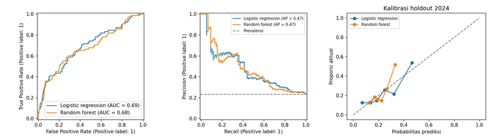

HR Attrition
Analytics
Saya menelaah turnover dan waktu bertahan, lalu membandingkan risiko keluar dengan pemisahan karyawan serta tahun evaluasi.
Kaplan-Meier · Cox PH · Logistic regression · Random forest
0,6915AUC logistic regression pada holdout.
Saya memakai risiko untuk diskusi retensi sukarela.
Lihat analisis yang sedang ditinjau
Saya memakai risiko untuk diskusi retensi sukarela.
